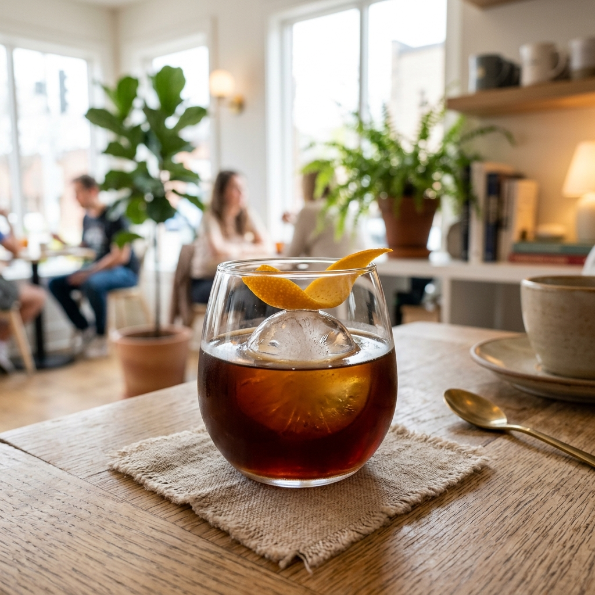

Favorite
Rp 32.000
Seduh Dingin Nusantara
Cold brew 18 jam dengan sentuhan aroma jeruk lokal dan keasaman manis madu hutan liar.
Jeruk Lokal
Madu Hutan
18h Cold Drip
Acidity
Body
Dingin • Body Medium